作者与出版信息
摘要
副热带西边界流（WBCs）是指沿全球副热带海盆西部边缘流动的快速、狭窄洋流。
Subtropical western boundary currents (WBCs) refer to swift narrow oceanic currents that flow along the western edges of global subtropical ocean basins.
早期研究表明，在变暖气候下，西边界流正向极地延伸。
Earlier studies indicated that the WBCs are extending poleward under a warming climate.
然而，由于观测有限且气候模式分辨率较粗，温室增暖可能如何影响西边界流的纬向结构，仍不清楚。
However, owing to limited observations and coarse resolution of climate models, how greenhouse warming may affect the zonal structure of the WBCs remains unknown.
本文利用七个高分辨率气候模式，发现西边界流在变暖气候下出现近岸侧增强。
Here, using seven high-resolution climate models, we find an onshore intensification of the WBCs in a warming climate.
1950–2050 年期间，近岸侧加速的多模式集合平均值介于每十年 0.10 ± 0.08 至 0.51 ± 0.24 cm s−1 之间。
The multimodel ensemble mean of onshore acceleration ranges from 0.10 ± 0.08 to 0.51 ± 0.24 cm s−1 per decade over 1950–2050.
快速表层增暖伴随的海洋层结增强，使西边界流上抬，从而导致这一预估变化。
Enhanced oceanic stratification associated with fast surface warming induces an uplift of the WBCs, leading to the projected change.
近岸侧增强可能引发异常增暖，从而加剧沿岸海洋热浪、削弱近岸海洋吸收人为二氧化碳的能力，并使储存在陆架区海底以下的甲烷水合物失稳。
The onshore intensification could induce anomalous warming that exacerbates coastal marine heatwaves, reduces ability of the coastal oceans to absorb anthropogenic carbon dioxide and destabilizes methane hydrate stored below the sea floor of shelf regions.
正文引言
副热带西边界流（WBCs）是分布于全球海盆西部边缘的最重要环流带1，能够在热带与热带外地区之间高效输送物质和能量2,3（图 1a）。
Subtropical western boundary currents (WBCs) are the most important circulation belts located along the western edges of the global ocean basins1, serving as efficient conveyors of mass and energy between tropical and extratropical regions2,3 (Fig. 1a).
西边界流携带温暖、高盐的海水向极地流动，在陡峭大陆坡附近蜿蜒前行，随后进入不稳定的再循环区域并与海岸分离1。
Carrying warm and salty water poleward, the WBCs meander their paths in the vicinity of steep continental slopes before reaching the unstable recirculation region and separating from the coast1.
西边界流的经向迁移影响中纬度风暴轴的活动4以及海洋吸收碳的能力5。
Meridional migration of the WBCs affects activity of midlatitude storm tracks4 and ability of the ocean carbon uptake5.
西边界流变率的另一种表现是纬向摆动6–8。
Another manifestation of variability of the WBCs is zonal fluctuations6–8.
西边界流向岸移动会对近岸海洋产生显著影响。
An onshore shift of the WBCs exerts substantial impacts on coastal oceans.
例如，向岸移动的黑潮（KC）和东澳大利亚流（EAC）与地形相互作用，在大陆架上驱动富营养的上升流，为沿岸海域补充营养物质9–11。
For example, a shoreward Kuroshio Current (KC) and East Australian Current (EAC) interact with topography and drive nutrient-rich upwelling on continental shelves, fertilizing coastal areas9–11.
类似地，湾流（GS）向岸移动所引起的湾流水异常上涌，有助于形成高浓度的次表层硅藻聚集12。
Similarly, anomalous upwelling of the Gulf Stream (GS) water from an onshore movement contributes to formation of highly concentrated subsurface diatoms12.
相比之下，厄加勒斯流（AC）和巴西流（BC）向岸侧的蜿蜒摆动会造成水平流辐合，削弱陆架坡折处的上升流13,14，并使海洋捕食者种群减少15。
By contrast, the onshore meandering of the Agulhas Current (AC) and the Brazil Current (BC) causes a convergence of horizontal flows weakening shelf break upwelling13,14, reducing marine predator populations15.
尽管对上升流的影响因区域而异，但所有西边界流都观测到了近岸侧增强期间的增暖加剧现象，这有助于海洋热浪形成16。
Although the impact on upwelling is regionally dependent, enhanced warmings during onshore intensification are observed across all WBCs, contributing to formation of marine heatwaves16.
例如，观测表明，东澳大利亚流、黑潮和湾流的向岸移动分别会造成：东澳大利亚流核心附近约 35 km 范围内的邻近陆架水温升高17，太平洋亚洲边缘海显著增暖18，以及美国东海岸沿岸快速增暖19,20。
For example, an onshore movement of the EAC, KC and GS is observed to cause an increase in the adjacent shelf temperatures within a range of ~35 km from the EAC core17, a substantial warming of the Pacific Asian marginal seas18 and a fast warming along the US East Coast19,20, respectively.
此外，增暖会降低二氧化碳的溶解度，从而限制海洋吸收大气中人为二氧化碳的能力5,21–23，还可能使储存在陆架区海底以下的大量甲烷水合物失稳，甚至导致其释放，进而加剧周围气候系统的增暖24,25。
In addition, the warming reduces the solubility of carbon dioxide, which limits the ability of the oceans to absorb anthropogenic carbon dioxide in the atmosphere5,21–23 and could destabilize or even lead to a release of a large amount of methane hydrate stored below the sea floor of shelf regions, exacerbating warming of the surrounding climate system24,25.
研究发现，随着温室气体（GHGs）排放增加，西边界流出现向极增强26–28，其特征是延伸区增暖加剧5,29。
In response to increasing emissions of GHGs, the WBCs have been found to undergo a poleward intensification26–28, featuring an enhanced warming in their extension regions5,29.
然而，由于海流观测有限、数值模式分辨率较粗，西边界流的纬向特征可能如何变化仍不清楚，而这一问题对于预估边缘海和沿岸地区的变化至关重要。
However, owing to limited ocean current observations and coarse resolution of numerical models, the issue of how the zonal characteristics of the WBCs might change, crucial for projecting changes in marginal seas and coastal areas, remains unknown.
本文利用七个可用的高分辨率气候模式输出，发现全球副热带西边界流在全球变暖下出现近岸侧增强。
Here, using outputs from seven available high-resolution climate models, we find an onshore intensification of global subtropical WBCs under global warming.
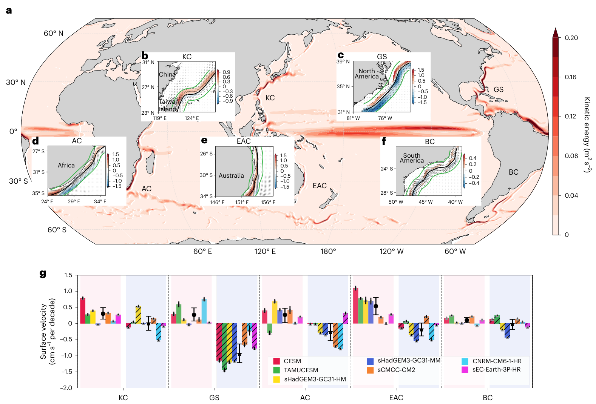
图 1｜模式模拟的全球变暖下副热带西边界流近岸侧增强。
Fig. 1 | Simulated onshore intensification of subtropical WBCs under global warming.
a，基于七个高分辨率气候模式 1950–2050 年集合平均的全球海洋表层海流时间平均动能。
a, Time–mean kinetic energy of surface current in the global ocean based on the ensemble mean of seven high-resolution climate models from 1950 to 2050.
b–f，五支副热带西边界流的表层流速线性趋势（单位为每十年 cm s−1）：黑潮（KC，b）、湾流（GS，c）、厄加勒斯流（AC，d）、东澳大利亚流（EAC，e）和巴西流（BC，f）。
b–f, Linear trends of surface velocity (cm s−1 per decade) of five subtropical WBCs: KC (b); GS (c); AC (d); EAC (e); and BC (f).
彩色阴影表示统计显著性超过 95% 置信水平的区域。
The colour shadings indicate regions that are statistically significant above the 95% confidence level.
黑色实线为流轴（见“方法”中的“西边界流的流轴及近岸侧／离岸侧趋势”小节）。
The solid black lines are the current axes (section ‘The axes of WBCs and onshore/ offshore trends’ in Methods).
黑色箭头表示海流向量。
The black arrows indicate the current vectors.
绿线围出了流轴两侧各 1° 宽的带状区域。
The green lines enclose the 1° band on both sides of the axis.
g，不同模式中五支西边界流近岸侧（彩色填充）和离岸侧（线纹填充）1° 宽带状区域内平均的流速趋势大小。
g, Magnitude of the velocity trend averaged over the 1° band on the onshore (colour shading) and offshore (line shading) flanks of five WBCs in different models.
每个柱上的黑线表示基于相应模式及西边界流的 1,212 个样本得到的误差棒。
The black line on each bar represents the error bar based on 1,212 samples for each model and the respective WBC.
灰色三角形表示各模式的趋势。
The grey triangle indicates the trend in each model.
黑色圆点（星号）表示基于七个样本的西边界流近岸侧（离岸侧）多模式集合平均值，误差棒则根据自助法估计的 95% 置信区间，表示模式间离散度。
The black circles (stars) denote the multimodel ensemble mean on the onshore (offshore) side of WBCs based on seven samples, while the error bars indicate the intermodel spread based on 95% confidence intervals estimated by a bootstrap method.
七个可用高分辨率气候模式的一致结果表明，在变暖气候下，西边界流预计会出现近岸侧增强。
The onshore intensification of WBCs is expected in a warming climate, as indicated by a consensus of all seven available high-resolution climate models.
西边界流的近岸侧增强
Onshore intensification of WBCs
我们利用七个可用的高分辨率气候模式，研究 1950–2050 年期间西边界流的表层流速趋势（补充表 1；见“方法”中的“HighResMIP 和 CESM 模式模拟”小节）。
We explore the surface velocity trends of the WBCs over the 1950–2050 period using seven available high-resolution climate models (Supplementary Table 1; section ‘HighResMIP and CESM model simulations’ in Methods).
这些模式的海洋空间分辨率为 0.25° 或 0.1°，能够合理模拟西边界流纬向尺度狭小的特征。
The ocean spatial resolutions of these models are 0.25° or 0.1°, allowing reasonable simulation of the characteristics of a small zonal extent of the WBCs.
七个可用模式中的六个来自高分辨率模式比较计划（HighResMIP）30，采用 1950–2014 年的历史强迫，以及 2015–2050 年的共享社会经济路径 585（SSP 585）强迫。
Six of the seven available models are obtained from the High-Resolution Model Intercomparison Project (HighResMIP)30, run under historical forcing from 1950 to 2014 and shared socioeconomic pathway 585 (SSP 585) forcing from 2015 to 2050.
此外，我们还使用了国际高分辨率地球系统预测实验室基于社区地球系统模式 1.3 版开展的高分辨率模拟（CESM1.3-iHESP）31；该模拟采用 1950–2005 年的历史强迫，以及 2006–2100 年的代表性浓度路径 8.5（RCP 8.5）强迫。
Additionally, a high-resolution simulation based on the Community Earth System Model v.1.3 by the International Laboratory for High‐resolution Earth System Prediction (CESM1.3-iHESP)31 is used, which uses historical forcing from 1950 to 2005 and representative concentration pathway 8.5 (RCP 8.5) forcing from 2006 to 2100.
与典型断面上的观测进行比较表明，这些模式基本再现了西边界流观测到的体积输送量（补充表 2）32–37。
Comparison with observations along typical sections reveals that the models largely reproduce the observed volume transport of WBCs (Supplementary Table 2)32–37.
我们计算了这些高分辨率模拟在 1950–2050 年期间的表层流速线性趋势。
We compute the linear trend of surface velocities in these high-resolution simulations over the period of 1950–2050.
全球海洋中五支主要西边界流（黑潮、湾流、厄加勒斯流、东澳大利亚流和巴西流）的表层流速呈现纬向相反的趋势：流轴近岸侧加速，离岸侧减速（图 1b–f；见“方法”中的“西边界流的流轴及近岸侧／离岸侧趋势”小节）。
The surface velocity trends of five major WBCs (KC, GS, AC, EAC and BC) in the global ocean exhibit zonally opposite trends, with acceleration on the onshore side and deceleration on the offshore side of their axes, respectively (Fig. 1b–f; section ‘The axes of WBCs and onshore/ offshore trends’ in Methods).
例如，黑潮流轴西侧的正流速趋势从台湾岛以东延伸至吐噶喇海峡，表明东海大陆架附近的水体输送量增大（图 1b）。
For instance, a positive velocity trend on the western side of the Kuroshio axis extends from the east of Taiwan Island to the Tokala Strait, indicating a greater transport of water near the continental shelf of the East China Sea (Fig. 1b).
与近岸侧加速相比，湾流离岸侧减速更为显著（图 1c），而厄加勒斯流加速和减速的速率几乎相等（图 1d）。
The deceleration on the offshore side of the GS is more pronounced compared to the acceleration on its onshore side (Fig. 1c), while the AC demonstrates nearly equal rates of acceleration and deceleration (Fig. 1d).
在这五支洋流中，东澳大利亚流的近岸侧加速最强（图 1e）；巴西流是最弱的西边界流之一，其变化幅度相对较小（图 1f）。
Among the five currents, the EAC experiences the strongest onshore acceleration (Fig. 1e), whereas the BC, which is one of the weakest WBCs, exhibits a relatively smaller amplitude (Fig. 1f).
为了量化这五支西边界流的近岸侧加速和离岸侧减速，我们计算各流轴两侧 1° 宽带状区域内的空间平均流速趋势（图 1b–f 中的绿线）。
To quantify the onshore acceleration and offshore deceleration of the five WBCs, we calculate the spatial mean velocity trend within a 1° band on both sides of each WBC axis (green lines in Fig. 1b–f).
尽管趋势强度因模式而异，但所有西边界流同步发生近岸侧增强的特征具有稳健性（图 1g）。
Although the strength of the trends varies among models, the characteristics of a synchronous onshore intensification of all WBCs are robust (Fig. 1g).
黑潮近岸侧加速用空间平均幅度及模式间离散度表示，为每十年 0.30 ± 0.18 cm s−1。
The onshore acceleration of the KC is represented by a spatial mean amplitude and an intermodel spread, measuring 0.30 ± 0.18 cm s−1 per decade.
五支西边界流中最显著的离岸侧减速出现在湾流沿线，达到每十年 −0.94 ± 0.29 cm s−1。
The most pronounced offshore deceleration among the five WBCs is observed along the GS, reaching −0.94 ± 0.29 cm s−1 per decade.
厄加勒斯流的平均近岸侧加速与离岸侧减速强度相近。
The strength of the mean onshore acceleration and offshore deceleration of the AC is similar.
在这五支洋流中，东澳大利亚流和巴西流的近岸侧加速分别最强和最弱，其幅度分别为每十年 0.51 ± 0.24 和 0.10 ± 0.08 cm s−1（图 1g）。
The EAC and BC exhibit the strongest and weakest onshore acceleration among the five currents, with magnitudes of 0.51 ± 0.24 and 0.10 ± 0.08 cm s−1 per decade, respectively (Fig. 1g).
我们还使用轴线位置指数（AP），通过比较西边界流流轴近岸侧与离岸侧空间平均趋势的差值，来描述近岸侧增强（见“方法”中的“轴线位置指数”小节）。
We also use an axis position index (AP) to describe the onshore intensification by comparing the spatial mean trend difference between the onshore and offshore sides of the WBC axis (section ‘Axis position index’ in Methods).
轴线位置指数表明，所有西边界流的近岸侧表层流速加速均比离岸侧更为显著（扩展数据图 1）。
The AP suggests a more pronounced acceleration of surface velocities on the onshore flank compared to the offshore flank of all WBCs (Extended Data Fig. 1).
西边界流的近岸侧增强在上层 200 m 内具有稳健性（扩展数据图 2）。
The onshore intensification of WBCs is robust in the upper 200 m (Extended Data Fig. 2).
西边界流表层流速在全球同步发生近岸侧增强，表明这些强劲洋流将温暖、高盐的西边界流水带到更靠近大陆架和沿岸地区的位置。
The globally synchronous onshore intensification of surface velocity in WBCs suggests that these strong currents bring warm/salty WBC water closer to continental shelves and coastal areas.
我们评估了历史模拟中的模拟趋势（扩展数据图 3a–e）。
We assess the simulated trend in historical simulations (Extended Data Fig. 3a–e).
历史模拟中西边界流近岸侧的加速趋势，小于整个 1950–2050 年期间的趋势。
The simulated acceleration trends on the onshore flank of WBCs are smaller than those over the 1950–2050 period.
鉴于历史时期的温室气体强迫较弱，这些结果并不令人意外。
These results are not surprising given that GHG forcing in the historical period is not as strong.
历史时期与整个 1950–2050 年期间的趋势之差（扩展数据图 3f），介于每十年 0.04 ± 0.1 cm s−1 至每十年 0.31 ± 0.18 cm s−1 之间。
The difference between the trend during the historical period and during the entire 1950–2050 period (Extended Data Fig. 3f) ranges from 0.04 ± 0.1 cm s−1 per decade to 0.31 ± 0.18 cm s−1 per decade.
相比之下，在预估模拟时期（RCP 8.5／SSP 585），近岸侧加速要强得多。
In comparison, the onshore acceleration is much larger during the projected (RCP 8.5/SSP 585) simulation period.
预估的近岸侧趋势因西边界流而异，其大小为 1950–2050 年期间趋势的 1.5–1.8 倍。
The projected trend on the onshore flank varies with WBCs, which is 1.5–1.8 times larger than that during 1950–2050.
因此，在 RCP 8.5 情景中，2005 年之后的变化更明显；在 SSP 585 情景中，2015 年之后的变化更明显。
Thus, the change is more pronounced after 2005 as in RCP 8.5 or after 2015 as in SSP 585.
表面风与海洋层结的变化
Changes in surface wind and oceanic stratification
这种纬向变化表明，在变暖气候下，全球副热带西边界流的近岸侧同步加速。
The zonal change suggests a globally synchronous acceleration on the onshore flanks of the subtropical WBCs in a warming climate.
可能导致西边界流变化的过程包括副热带风场变化38–40和海洋层结变化40,41。
Potential processes that may lead to the WBC changes include subtropical wind field38–40 and oceanic stratification40,41.
副热带风场调节西边界流的输送量和惯性边界层的宽度，进而决定西边界流的纬向范围及流轴位置。
The subtropical wind field regulates the transport of WBCs and the width of inertial boundary layers, which determines the zonal span and axis position of WBCs.
例如，海盆尺度风应力旋度减弱引起了 1993–2013 年期间黑潮减弱，同时伴随着黑潮更多地侵入东海42。
For example, the weakening of the Kuroshio during 1993–2013 resulting from weakened basin-scale wind stress curl is accompanied by more intrusion into the East China Sea42.
海洋层结影响西边界流的垂向范围。
The oceanic stratification influences the vertical extent of WBCs.
受位涡约束，西边界流沿大陆坡上与其垂向尺度相适应的等深线流动40。
Owing to the potential vorticity constraint, WBCs travel along the isobaths over the continental slope in line with their vertical scale40.
增强的层结将动能限制在上层，并使西边界流上抬41，从而使其倾向于沿大陆坡上较浅的等深线流动，导致流轴向岸移动。
The enhanced stratification traps the kinetic energy in the upper layer and uplifts the WBCs41 such that WBCs tend to follow shallower isobaths over the slope, leading to a shoreward shifting of their axes.
为探究全球变暖下风和层结的作用，我们进一步评估它们在气候模式中的变化。
To explore the role of wind and stratification under global warming, we proceed to assess their changes in the climate models.
基于七个气候模式，我们计算了全球海洋的海洋层结和表面风应力旋度（图 2）。
On the basis of seven climate models, we compute the oceanic stratification and surface wind stress curl in global oceans (Fig. 2).
以副热带北太平洋（SNP）为例，根据风生环流理论，向极地流动的黑潮由副热带北太平洋上的负风应力旋度驱动39,41（图 2a）。
Taking the subtropical North Pacific (SNP) as an example, according to the wind-driven circulation theory, the poleward-flowing KC is driven by the negative wind stress curl over the SNP39,41 (Fig. 2a).
在全球变暖下，高纬度更强的增暖削弱了经向温度梯度，导致中纬度西风减弱43。
Under global warming, the stronger warming at higher latitudes weakens the meridional temperature gradient, leading to weakened westerly winds in the midlatitudes43.
因此，变暖气候下副热带北太平洋上的负风应力旋度减弱44；在历史平均与 RCP 8.5／SSP 585 平均之间的风应力旋度差异中，这表现为正异常（图 2b；见“方法”中的“各副热带海洋的风和层结”小节）。
Therefore, the negative wind stress curl over the SNP weakens in a warming climate44, manifested as a positive anomaly in the difference of wind stress curl between the historical mean and RCP 8.5/SSP 585 mean (Fig. 2b; section ‘The wind and stratification in each subtropical ocean’ in Methods).
定量而言，与历史平均相比，副热带北太平洋空间平均风应力旋度的强度降低了 3.2%。
Quantitatively, the strength of the spatial mean wind stress curl in the SNP decreases by 3.2% compared to the historical mean.
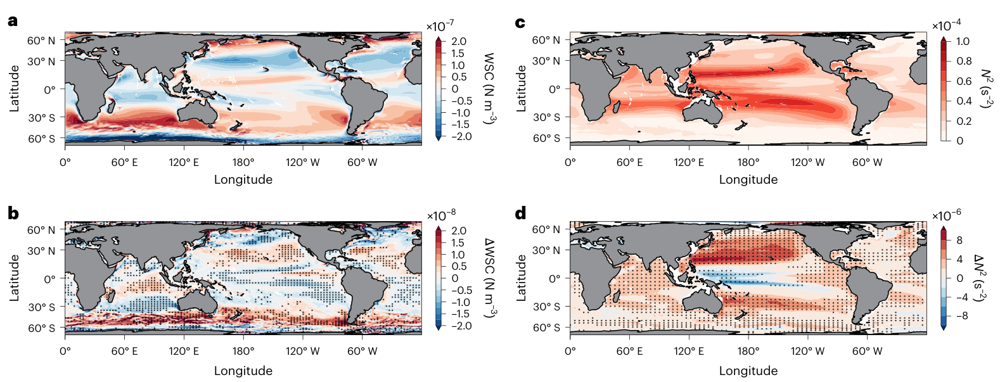
图 2｜全球变暖下表面风与海洋层结的变化。
Fig. 2 | Changes in surface wind and oceanic stratification under global warming.
a、b，历史时期的时间平均风应力旋度（WSCs；a）及其在全球变暖下的变化（b）。
a,b, Time–mean wind stress curls (WSCs) during the historical period (a) and their changes under global warming (b).
c、d，历史时期 200–400 m 深度范围内平均的时间平均海洋层结（c），及其在全球变暖下的变化（d）。
c,d, Time–mean oceanic stratification averaged at depths between 200 and 400 m during the historical period (c) and changes under global warming (d).
所有结果均基于七个气候模式的集合平均。
All the results are based on the ensemble mean of seven climate models.
全球变暖下的变化定义为预估时期平均值与历史时期平均值之差（见“方法”中的“HighResMIP 和 CESM 模式模拟”小节）。
Changes under global warming are defined as the difference between the mean over the projected period and the mean over the historical period (section ‘HighResMIP and CESM model simulations’ in Methods).
b 和 d 中的黑点表示统计显著性超过 95% 置信水平的变化。
The black dots in b and d represent the changes that are statistically significant above the 95% confidence level.
在变暖气候下，全球副热带环流中的风应力旋度减弱，而海洋层结增强。
In a warming climate, the WSC in global subtropical gyres weakens, but oceanic stratification enhances.
与历史平均状态（图 2c）相比，副热带北太平洋的海洋层结明显增强（图 2d）。
Compared to the historical average (Fig. 2c), an enhancement in oceanic stratification is evident in the SNP (Fig. 2d).
鉴于海洋层结主要受海水温度和盐度影响，我们进一步量化了这两个变量各自的贡献。
Given that oceanic stratification is primarily influenced by ocean temperature and salinity, we further quantify the respective contributions of these two variables.
在预估情景下，副热带北太平洋的空间平均海表温度（SST，以 5 m 层的温度表征）预计将升高 1.1 °C（扩展数据图 4a）。
The spatial mean sea surface temperature (SST, represented by the temperature at the 5 m layer) in the SNP is projected to increase by 1.1 °C under the projected scenario (Extended Data Fig. 4a).
增温集中在海洋上层，并随深度增加而减弱，从而使海洋层结增强45（扩展数据图 4k）。
The temperature increase is concentrated in the upper ocean and exhibits a decline with increasing depth, resulting in a stronger stratification of the ocean45 (Extended Data Fig. 4k).
由于降水增加，副热带北太平洋出现了全海盆范围的淡化46（扩展数据图 4f），但这种盐度变化对海洋层结的影响处于次要地位（扩展数据图 4k）。
The SNP experiences a basin-wide freshening due to increased precipitation46 (Extended Data Fig. 4f), but this change in salinity has a secondary impact on oceanic stratification (Extended Data Fig. 4k).
副热带北太平洋在空间和垂向上平均的海洋层结主要由温度变化控制；在 200–400 m 深度范围内取平均后，其预计将增加 0.37 × 10−5 s−2，即较历史平均值（6.20 × 10−5 s−2）增强 6.0%。
The spatial and vertical mean oceanic stratification in the SNP is dominated by temperature changes and is projected to increase by 0.37 × 10−5 s−2 averaged between 200 and 400 m, indicating a 6.0% intensification compared to the historical mean (6.20 × 10−5 s−2).
更强的层结使更多能量受限于海洋上层，并促使环流系统的增强更加集中于表层40,47。
A stronger stratification traps more energy in the upper ocean and induces a more surface-intensified circulation system40,47.
与副热带北太平洋类似，七个模式的集合平均表明，在全球变暖背景下，其他副热带海盆的风应力旋度减弱，而海洋层结增强（图 2 和扩展数据图 4）；尽管如此，南大洋的西风在变暖气候下仍会增强26（图 2a）。
Similar to the SNP, the seven-model ensemble mean indicates weakened wind stress curl and intensified oceanic stratification in other subtropical basins under global warming (Fig. 2 and Extended Data Fig. 4), although the westerly in the Southern Ocean intensifies in a warming climate26 (Fig. 2a).
在全球副热带环流区，空间平均风应力旋度减小 0.07–0.46 × 10−8 N m−3（相当于历史平均值的 1.4–6.4%），层结增强 0.28–0.48 × 10−5 s−2（相当于历史平均值的 5.3–9.5%）（补充表 3）。
In global subtropical gyres, the spatial mean wind stress curl decreases by 0.07–0.46 × 10−8 N m−3 (1.4–6.4% of the historical mean) and the stratification intensifies by 0.28–0.48 × 10−5 s−2 (5.3–9.5% of the historical mean) (Supplementary Table 3).
因此，对于大多数西边界流，与各自历史平均值相比，预估时期层结的相对变化幅度大于风应力旋度的相对变化幅度（补充表 3）。
Therefore, the relative changes during projected period in stratification are stronger than changes in wind stress curl for most WBCs compared to their historical mean (Supplementary Table 3).
前 30 年（1950–1979 年）与后 30 年（2021–2050 年）之间的风场和层结差异，与根据历史时期和预估时期平均值计算的差异一致。
The difference in wind and stratification between the first 30 years (1950–1979) and the last 30 years (2021–2050) is consistent with that based on historical and projected means.
层结增强主导近岸侧增强
Enhanced stratification dominates onshore intensification
为研究海洋层结和风应力旋度的变化对西边界流近岸侧增强的作用，我们考察了这两者的变化与西边界流近岸侧增强之间的关系。
To investigate the role of changing oceanic stratification and wind stress curl in affecting the onshore intensification of the WBCs, we examine the relationship between their changes and onshore intensification of the WBCs.
对于每支西边界流，我们首先计算其所在副热带海盆 200–400 m 深度范围内的垂向平均层结，以及海表风应力旋度（见“方法”中的“各副热带海域的风场与层结”一节）。
For each WBC, we first compute the vertical mean stratification between 200 and 400 m and surface wind stress curl in each subtropical basin (section ‘The wind and stratification in each subtropical ocean’ in Methods).
随后，基于历史平均值（CESM-iHESP 为 1950–2005 年，其他模式为 1950–2014 年）与 RCP 8.5/SSP 585 平均值（CESM-iHESP 为 2006–2050 年，其他模式为 2015–2050 年）之间差异的空间平均，计算这两者在全球变暖背景下的变化。
Subsequently, their changes under global warming are calculated on the basis of the spatial mean difference between the historical mean (1950–2005 for CESM-iHESP and 1950–2014 for other models) and the RCP 8.5/SSP 585 mean (2006–2050 for CESM-iHESP and 2015–2050 for other models).
西边界流的近岸侧增强与海洋层结增强（以副热带海域的平均值表征）存在较强相关性，线性相关系数为 0.60，统计上通过了 99% 置信水平的显著性检验（P < 0.01）（图 3a）。
The onshore intensification of WBCs displays a strong correlation with enhanced oceanic stratification (based on its averaged value in the subtropical ocean), with a linear correlation coefficient of 0.60, statistically significant above the 99% confidence level (P < 0.01) (Fig. 3a).
更强的海洋层结系统性地对应于更显著的近岸侧增强。
A stronger oceanic stratification is systematically associated with a greater onshore intensification.
相比之下，风应力旋度变化与西边界流近岸侧增强之间没有明确的关系（图 3b）。
In contrast, there is no clear relationship between changes in wind stress curl and the onshore intensification of WBCs (Fig. 3b).
因此，西边界流近岸侧增强主要由海洋层结变化驱动。
Thus, the onshore intensification of WBCs is primarily driven by changes in oceanic stratification.
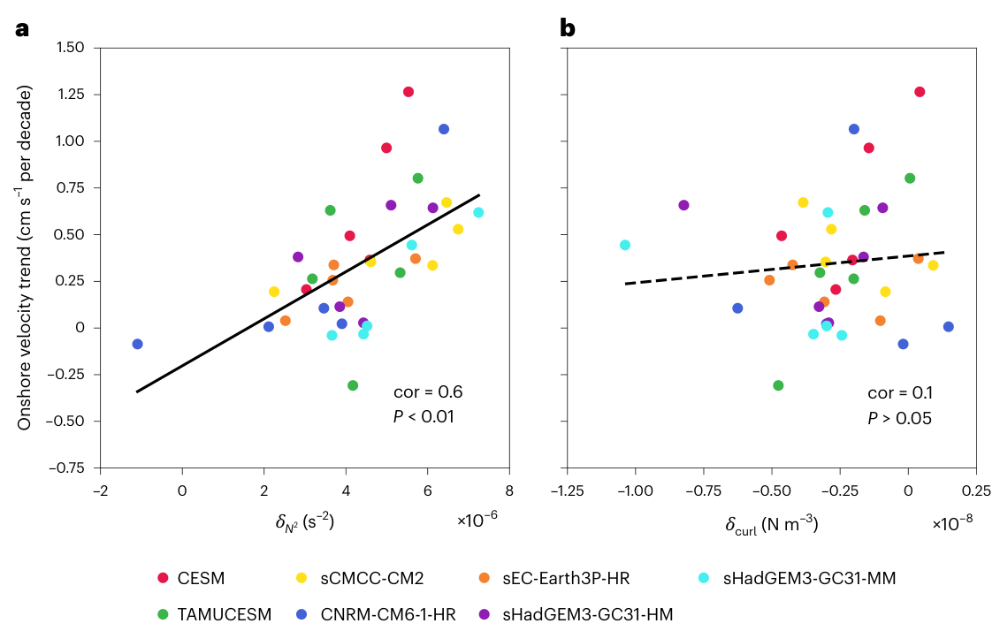
图 3 | 海洋层结增强主导的西边界流近岸侧增强。
Fig. 3 | WBC onshore intensification dominated by increasing oceanic stratification.
a，全球变暖背景下，西边界流近岸侧流速趋势与各副热带海盆 200–400 m 深度范围内平均海洋层结变化的散点图。
a, Scatterplot of the onshore velocity trends of the WBCs versus changes in oceanic stratification averaged between 200 and 400 m in each subtropical basin under global warming.
b，全球变暖背景下，西边界流近岸侧流速趋势与各副热带海盆平均海表风应力旋度变化的散点图。
b, Scatterplot of the onshore velocity trends of the WBCs versus changes in surface wind stress curl averaged in each subtropical basin under global warming.
海洋层结和风应力旋度的变化，以历史平均值与预估平均值之间的差异计算（见“方法”中的“各副热带海域的风场与层结”一节）。
Changes in oceanic stratification and wind stress curl are calculated as the difference between the historical mean and the projected mean (section ‘The wind and stratification in each subtropical ocean’ in Methods).
a 中的实线表示线性回归，相关系数（cor）为 0.60，具有统计显著性（P = 2 × 10−4，双侧检验）；b 中的拟合则表明相关系数为 0.10，未达到显著性水平（P = 0.57，双侧检验）。
The solid line in a represents the linear regression with a statistically significant correlation coefficient (cor) of 0.60 (P = 2 × 10−4, two-sided test), while the fit in b indicates a non-significant correlation coefficient of 0.10 (P = 0.57, two-sided test).
在每个模式中，近岸侧流速、层结变化和风应力旋度变化，均以预估平均与历史平均之间的全球平均 SST 差值进行归一化。
In each model, the onshore velocity, the changes in stratification and the changes in wind stress curl are scaled by the global mean SST difference between the projected mean and the historical mean.
在温室效应引起的变暖背景下，西边界流近岸侧增强与海洋层结增强的联系，比其与风应力旋度减弱的联系更为密切。
Under greenhouse warming, the WBC onshore intensification is more associated with increased oceanic stratification than with weakened wind stress curl.
为确认风场和层结变化在影响西边界流纬向结构方面的相对重要性，我们基于麻省理工学院大洋环流模式48（MITgcm）开展了一组理想化高分辨率试验（见“方法”中的“MITgcm 模式”一节）。
To confirm the relative importance of changing wind and stratification in affecting the zonal structure of the WBCs, we conduct a set of idealized high-resolution experiments based on the Massachusetts Institute of Technology general circulation model48 (MITgcm) (section ‘MITgcm model’ in Methods).
模式区域由近岸浅陆架和平坦的深海组成，两者由大陆坡连接（扩展数据图 5a）。
The model domain consists of a shallow coastal shelf and a flat deep ocean connected by a continental slope (Extended Data Fig. 5a).
由于副热带环流区层结的增强主要由温度变化决定，海洋盐度保持为恒定的 35 g kg−1，而温度垂向剖面则取各副热带海盆内的平均值（扩展数据图 5b）。
Since the intensified stratification in the subtropical gyres is primarily determined by temperature variations, the ocean salinity is maintained constant at 35 g kg−1, while the vertical temperature profile is averaged over each subtropical basin (Extended Data Fig. 5b).
因此，层结随温度变化而变化。
Hence, the stratification follows the changes in temperature.
风强迫用理想化的余弦型纬向风应力表示，其中低纬度为东风信风，中纬度为西风（扩展数据图 5c）。
The wind forcing is represented by an idealized cosine zonal wind stress, with easterly trade winds in low latitudes and westerly winds in midlatitudes (Extended Data Fig. 5c).
对于每支西边界流，相关试验包括：使用观测和再分析资料中的气候平均风强迫及海洋温度场驱动的模拟（CTRL 试验）；同时考虑变暖引起的风强迫和层结变化的模拟（WARMING 试验）；以及分别考虑层结变化（ΔN2 试验；N2 表示浮力频率）和风强迫变化（ΔWIND 试验）的两项模拟。
For each WBC, the associated experiments consist of a simulation forced with climatological mean wind forcing and oceanic temperature field obtained from observations and reanalysis data (CTRL run), a simulation with warming-induced changes in both wind forcing and stratification (WARMING run) and two simulations considering changes in stratification (ΔN2 run; N2 indicates buoyancy frequency) and wind forcing (ΔWIND run), respectively.
在后面三项试验中，层结和风强迫的变化均依据七个气候模式中历史时期与预估变暖情景之间的差异设定。
In the last three runs, the changes in stratification and wind forcing are based on the difference between the historical period and projected warming scenarios in the seven climate models.
因此，比较这些模拟可以评估西边界流流轴在变暖气候下的表现，以及层结和风强迫变化的相对重要性。
As such, comparisons between these simulations allow us to assess the behaviour of WBC axes in a warming climate and the relative importance of changes in stratification and wind forcing.
我们以副热带北太平洋为例说明其中的动力学过程（图 4a–d）。
We use the SNP as an example to describe the dynamics (Fig. 4a–d).
其他海盆中的过程与之相似（扩展数据图 6 和补充表 4）。
Processes in other basins are similar (Extended Data Fig. 6 and Supplementary Table 4).
在 CTRL 试验中（图 4a），黑潮沿大陆坡流动，最大流速约为 1.0 m s−1，与现场观测一致1。
In the CTRL run (Fig. 4a), the Kuroshio flows along the continental slope with a maximum around 1.0 m s−1, in accord with in situ observations1.
在变暖气候下（图 4b），向极流速异常呈偶极型分布，平均流轴的近岸侧加速、离岸侧减速，与气候模式的结果一致。
In a warming climate (Fig. 4b), the poleward velocity anomalies exhibit a dipole pattern with acceleration on the onshore flank and deceleration on the offshore flank of the mean current axis, consistent with climate models.
由于近岸侧海洋较浅，全球变暖背景下的黑潮也呈现更浅的结构。
Given that the ocean becomes shallow on the onshore flank, a shallower Kuroshio is seen under global warming.
在 ΔN2 试验中，层结增强使黑潮流轴两侧出现类似的偶极型分布（图 4c），表明黑潮的近岸侧增强主要由层结增强引起。
In the ΔN2 run, enhanced stratification results in a similar dipole pattern along the Kuroshio axis (Fig. 4c), suggesting that the onshore intensified Kuroshio is mainly induced by enhanced stratification.
相比之下，在 ΔWIND 试验中，离岸侧出现了明显减速（图 4d），说明风场减弱主要导致黑潮整体减弱，而非近岸侧增强。
By comparison, notable deceleration is found on the offshore flank in the ΔWIND run (Fig. 4d), indicating that weakened wind primarily leads to an overall weakening rather than an onshore intensification of the Kuroshio.
此外，通过比较这四项试验中归一化的输送量分布，也可以揭示黑潮的演变。
Furthermore, the evolution of the Kuroshio can also be revealed by comparing the normalized transport distribution in the four runs.
响应全球变暖，近岸侧（离岸侧）输送量的增加（减少）反映了黑潮的近岸侧增强。
The increased (decreased) transport on the onshore (offshore) flank in response to global warming reflects an onshore intensification of the Kuroshio.
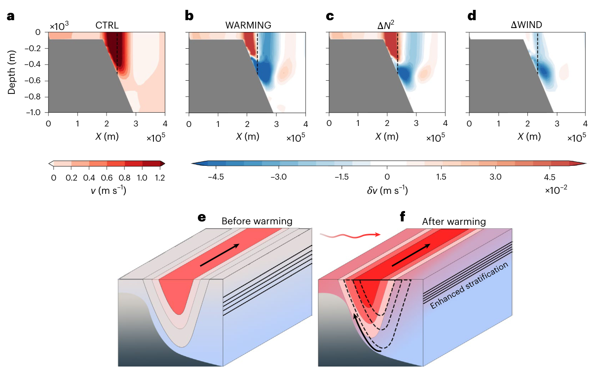
图 4 | 西边界流近岸侧增强的机制。
Fig. 4 | Mechanism of the WBC onshore intensification.
a，CTRL 试验中西边界区域经向流速的垂直剖面。
a, Vertical section of the meridional velocities in the western boundary region of the CTRL run.
b–d，WARMING 试验（b）、∆N2 试验（c）和 ∆WIND 试验（d）相对于 CTRL 试验的经向流速变化。
b–d, Meridional velocity changes in WARMING run (b), ∆N2 run (c) and ∆WIND run (d) relative to the CTRL run.
虚线表示黑潮流轴。
The dashed line denotes the axis of the Kuroshio.
该垂直剖面位于模式区域的经向中央（扩展数据图 5a）。
The vertical section is located at the meridional centre of the model domain (Extended Data Fig. 5a).
e，变暖前西边界流垂向结构的示意图，此时海洋层结较弱，西边界流的垂向延伸范围较大。
e, Schematic showing the vertical structure of the WBC before warming, during which the ocean is weakly stratified and the vertical extent of the WBC is large.
f，变暖后西边界流垂向结构的示意图，此时海洋层结增强，导致西边界流在垂向上收缩并向岸移动（弯曲箭头；对比实线和虚线）。
f, Schematic showing the vertical structure of the WBC after warming when the ocean stratification is enhanced, leading to a vertical shrinking and shoreward movement of WBC (curved arrow; compare solid and dashed lines).
彩色填色表示海水温度，黑色实线表示等温线。
The colour shadings denote the ocean temperature and the solid black lines indicate the isotherms.
西边界流的近岸侧增强主要受变暖引起的海洋层结增强控制。
The onshore intensification of WBCs is dominated by a warming-induced intensification in oceanic stratification.
为定量比较风场和层结的作用，我们引入了两个指数。
To compare the roles of wind and stratification quantitatively, we introduce two indices.
AP 描述近岸侧输送量相对于 CTRL 试验中相应输送量的贡献（见“方法”中的“轴线位置指数”一节）。
An AP describes the contribution of onshore flank transport relative to that in the CTRL run (section ‘Axis position index’ in Methods).
按照定义，CTRL 试验中的 AP 为 0。
By definition, AP in the CTRL run is 0.
除流轴位置的变化外，西边界流的近岸侧增强还伴随着其垂向结构变浅。
In addition to the change of the axis position, the onshore intensification of a WBC is accompanied by its shallower structure.
因此，将西边界流深度指数（D）定义如下（见“方法”中的“西边界流的垂向尺度”一节）49,50：
Therefore, a WBC depth index (D) is defined (section ‘Vertical scale of WBCs’ in Methods)49,50 as
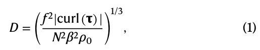
并将其作为近岸侧增强的替代指标。
and is taken as a proxy of the onshore intensification.
在式（1）中，|curl(τ)| 和 N2 分别表征风应力旋度和海洋层结的作用。
In equation (1), |curl(τ)| and N2 describe the roles of wind stress curl and oceanic stratification, respectively.
将 CTRL 试验中的风应力旋度和温度剖面代入式（1），可得到 D 的参考值（292.1 m）。
By substituting the wind stress curl and temperature profile from the CTRL run into equation (1), we obtain the reference value of D (292.1 m).
层结增强和风场减弱均可能使 D 减小。
Enhanced stratification and weakened wind field could lead to a smaller D.
七个气候模式预估，在全球变暖背景下，副热带北太平洋海洋层结增强 6%（0.37 × 10−5 s−2），风应力旋度减弱 3%（0.23 × 10−8 N m−3），使 AP 和 D 分别变化 1.35 × 10−2 和 −9.4 m。
Under global warming, a 6% increase in oceanic stratification (0.37 × 10−5 s−2) and a 3% decrease in the wind stress curl over the SNP (0.23 × 10−8 N m−3), as projected by the seven climate models, lead to changes in the AP and D of 1.35 × 10−2 and −9.4 m, respectively.
分别考察层结和风场的独立作用后，我们发现，层结增强主导了 AP 和 D 的变化（分别为 0.95 × 10−2 和 −6.5 m）；风应力旋度减弱的影响则较小，导致 AP 和 D 分别变化 0.46 × 10−2 和 −3.0 m。
By separately considering the independent effect of stratification and wind, we find that the enhanced stratification dominates changes in AP and D (0.95 × 10−2 and −6.5 m), whereas the weakened wind stress curl has a minor impact, with changes in AP and D of 0.46 × 10−2 and −3.0 m, respectively.
为进一步研究海洋层结在其他西边界流中的作用，我们开展了一系列与副热带北太平洋试验类似的试验（见“方法”中的“MITgcm 模式”一节）。
To further investigate the role of oceanic stratification in other WBCs, we conduct a series of experiments similar to the SNP (section ‘MITgcm model’ in Methods).
所有西边界流都再现了近岸侧增强，而且这种增强主要由海洋层结变化驱动（扩展数据图 6 和补充表 4）。
The onshore intensification, reproduced for all WBCs, is primarily driven by changes in oceanic stratification (Extended Data Fig. 6 and Supplementary Table 4).
为检验相关动力学过程的稳健性，我们还开展了一系列采用真实温度、盐度、风强迫和海底地形的试验（见“方法”中的“MITgcm 模式”一节）。
To test the robustness of the associated dynamics, we also conduct a series of experiments with realistic temperature, salinity, wind forcing and bottom topography (section ‘MITgcm model’ in Methods).
这些模拟再现了近岸侧加速（补充图 1），而该加速主要由层结增强引起（补充图 2），与理想化模式的结果一致。
The simulations reproduce the acceleration on the onshore flank (Supplementary Fig. 1), which is mainly induced by the enhanced stratification (Supplementary Fig. 2), consistent with our idealized model.
因此，全球变暖增强了海洋层结，使洋流被压缩到更浅的水层中，并沿大陆坡上更浅的等深线流动。
Thus, global warming intensifies oceanic stratification, causing the current to be compressed into a shallower layer and to travel along shallower isobaths over the continental slope.
由此，西边界流向岸侧区域移动（图 4e、f）。
As a result, the WBCs shift to shoreward regions (Fig. 4e,f).
总结与意义
Summary and implications
我们发现，温室效应引起的变暖背景下，全球副热带西边界流会出现近岸侧增强，而这一变化的基础是海洋层结增强。
Our finding of an onshore intensification of global subtropical WBCs under greenhouse warming is underpinned by an intensified ocean stratification.
观测中也出现了这种近岸侧增强，不过由于观测时段较短，各支西边界流存在程度不同的不确定性7,20,51。
This onshore intensification is also seen in observations, although with varying uncertainties among different WBCs due to a short observation period7,20,51.
层结增强又源于近海表海水的增温速度快于下方海水，这一特征在各模式中均具有稳健性，也包括那些能够合理分辨西边界流快速、狭窄结构的高分辨率模式。
The intensified stratification is in turn driven by a faster warming near the surface ocean than the ocean below, which is robust across models, including the high-resolution models that reasonably resolve the swift narrow structure of WBCs.
我们发现的西边界流近岸侧增强可能具有深远影响。
Our finding of a WBC onshore intensification could have profound implications.
厄加勒斯浅滩和巴西东南部海湾的上升流减少，可能造成低营养盐状态，正如上升流异常减弱时所观察到的情形12,13,15，并可能扰乱这些区域的生态平衡。
A reduced upwelling in the Agulhas Bank and the Southeast Brazilian Bight probably induces low-nutrient conditions, as seen when an anomalous reduction in upwelling occurs12,13,15 that could disrupt the ecological balance of the regions.
此外，由于近岸侧增强进一步加剧了增温，可能出现更强的海洋热浪52、海洋吸收二氧化碳能力下降5,21,22，以及陆架海底以下甲烷水合物失稳风险上升24,25。
Further, as a consequence of the enhanced warming from the onshore intensification, more intense marine heatwaves52, a reduced ocean ability to absorb carbon dioxide5,21,22 and an increased risk of destabilized methane hydrate below the shelf sea floor24,25, are likely to occur.
因此，我们的结果强调了对相关影响进行全面评估的必要性。
Thus, our result highlights the needs for a comprehensive assessment of the associated impacts.
在线内容
Online content
方法
Methods
HighResMIP 和 CESM 模式模拟
HighResMIP and CESM model simulations
为研究未来气候下西边界流两侧流速的长期预估趋势，我们使用了七个气候模式。
To investigate the projected long-term trends of the velocity on the two sides of the WBCs in future climate, we use seven climate models.
这七个模式中的六个模式（共 14 组试验）来自第六阶段耦合模式比较计划（CMIP6）53中的高分辨率模式比较计划（HighResMIP）30（补充表 1）。
Six of these seven models (14 experiments) are obtained from the HighResMIP30 (Supplementary Table 1) of the coupled model intercomparison project phase 6 (CMIP6)53.
为评估提高模式水平分辨率的益处，HighResMIP 中的“标准”高分辨率（HR）模式采用 0.25° 或 0.1° 的海洋网格间距（补充表 1），并配以一系列不同的大气分辨率。
To assess benefits of increased horizontal model resolution, ‘standard’ HR models in HighResMIP are configured with an ocean grid spacing of 0.25° or 0.1° (Supplementary Table 1) together with a range of atmosphere resolutions.
每个模式均使用恒定的 20 世纪 50 年代强迫，进行 30–50 年的预积分。
A spin-up of 30–50 years is made for each model using constant 1950s forcing.
预积分之后，所有模式先在 1950–2014 年随时间变化的历史强迫下运行（hist-1950 试验），再在 2015–2050 年按 SSP 585 排放情景规定的未来温室气体强迫下运行（高分辨率未来试验）。
After spin-up, all models are run under time-varying historical forcing from 1950 to 2014 (hist-1950 run) and future GHG forcing following the SSP 585 emission scenario for the period 2015–2050 (high-resolution future run).
该情景到 2100 年引入 8.5 W m−1 的额外辐射强迫（参考文献 53）。
This scenario incorporates an extra radiative forcing of 8.5 W m−1 (ref. 53) by the year 2100.
本研究使用上述六个 HighResMIP 模式的月输出，即水平流速、位温和风应力。
In this study, monthly outputs (that is, horizontal velocity, potential temperature and wind stress) from the six HighResMIP models are used.
为避免进行了多组试验的模式占据主导，在计算多模式统计量之前，先分别在 EC-Earth-3P-HR（参考文献 54）、CMCC-CM2（参考文献 55）、HadGEM3-GC31-HM 和 HadGEM3-GC31-MM（参考文献 56、57）各模式内部对其试验取平均。
To avoid dominance by models in which multiple experiments are preformed, the experiments of EC-Earth-3P-HR (ref. 54), CMCC-CM2 (ref. 55), HadGEM3-GC31-HM and HadGEM3-GC31-MM (refs. 56,57) are averaged first in each model before calculating the multimodel statistics.
本研究使用的时段为 1950–2050 年。
The period used in this study is from 1950 to 2050.
除 HighResMIP 产品外，还使用了 CESM1.3-iHESP 在 1950–2050 年的月模式输出31。
In addition to HighResMIP products, model outputs from the monthly CESM1.3-iHESP from 1950 to 2050 are also used31.
该模式的大气分量为通用大气模式第 5 版（CAM5），海洋分量为并行海洋程序第 2 版（POP2）。
The model contains the Community Atmosphere Model v.5 (CAM5) as its atmosphere component and the Parallel Ocean Program v.2 (POP2) as its ocean component.
CAM5 和 POP2 的分辨率分别为 0.25° 和 0.1°。
The resolutions of CAM5 and POP2 are 0.25° and 0.1°, respectively.
CESM1.3-iHESP 的海洋分量以静止海洋以及《世界海洋图集》中的 1 月气候平均位温和盐度进行初始化，而大气分量则从此前模拟的重启文件开始进行预积分。
The ocean component of the CESM1.3-iHESP is initialized with a rest ocean and the mean January climatological potential temperature and salinity from the World Ocean Atlas, while atmosphere component is spun up from restart files of previously performed simulations.
模拟包括一次 500 年的工业化前控制模拟（PI-CTRL），以及一次从 PI-CTRL 第 250 年分支出来、覆盖 1850–2100 年、长达 250 年的瞬变气候模拟（HF‐TNST）；后者包含历史阶段（1850–2005 年）和未来 RCP 8.5 阶段（2006–2100 年）。
The simulation consists of a 500 year pre-industrial control simulation (PI-CTRL) run, a 250 year historical (1850–2005) and a future RCP 8.5 (2006–2100) transient climate simulation (HF‐TNST) run from 1850 to 2100 branched from PI‐CTRL at year 250.
需要说明的是，CESM1.3-iHESP 按照 CMIP5 试验协议施加强迫，因此不同于参与 HighResMIP 的 CESM 模式；后者由得克萨斯农工大学（TAMU）提供，为加以区分，本研究将其称为 CESM-TAMU。
It should be noted that CESM1.3-iHESP is forced under the CMIP5 experimental protocol and therefore is different from the CESM model participating in HighResMIP, which is otherwise provided by Texas A&M University (TAMU) and for differentiation is designated as CESM-TAMU in this study.
需要说明的是，CMIP6 模式的时段与 CESM1.3-iHESP 模式略有不同。
It should be noted that the time periods in the CMIP6 models slightly differ from those in the CESM1.3-iHESP model.
因此，历史时段对于 CMIP6 模式为 1950–2014 年，对于 CESM1.3-iHESP 模式为 1950–2005 年；而预估时段对于 CMIP6 模式为 2015–2050 年，对于 CESM1.3-iHESP 模式为 2006–2050 年。
Therefore, the historical period refers to 1950–2014 for the CMIP6 models and 1950–2005 for the CESM1.3-iHESP model, while the projected period refers to 2015–2050 for the CMIP6 models and 2006–2050 for the CESM1.3-iHESP model, respectively.
尽管存在这一差异，SSP 585 和 RCP 8.5 两种情景都能有效表征受温室增暖影响的气候系统。
Despite this difference, both the SSP 585 and RCP 8.5 scenarios effectively represent the climate system subject to greenhouse warming.
本研究使用 Student t 检验的 95% 置信水平，评估随时间变化的线性趋势的显著性。
In this study, the significant confidence levels of time-related linear trends are estimated using 95% Student’s t-test confidence level.
与模式间不确定性有关的显著性置信水平，采用 95% 自助法置信区间进行估计。
The significant confidence levels associated with intermodel uncertainty are estimated using 95% bootstrap confidence intervals.
自助法置信区间根据 2,000 个样本计算。
The bootstrap confidence intervals are computed from 2,000 samples.
西边界流轴线及其近岸侧和离岸侧趋势
The axes of WBCs and onshore/offshore trends
西边界流的轴线定义为历史平均沿流向流速最大值所在的位置。
The axis of a WBC is defined by the location of maximum along-stream velocity based on the historical mean.
这里，HighResMIP 产品的历史时段为 1950–2014 年，CESM1.3-iHESP 模式的历史时段为 1950–2005 年。
Here, the historical period is 1950 to 2014 for the HighResMIP products and from 1950 to 2005 for the CESM1.3-iHESP model, respectively.
通过对轴线西侧和东侧各 1° 宽带状区域（图 1b–f 中的绿线）取平均，计算轴线两侧表层流速趋势的空间平均值。
The spatial mean trend of surface velocity on both sides of the axis is calculated by averaging within a 1° band on the western and eastern sides of the axis (green lines in Fig. 1b–f).
此外，由于海洋内部的流速通常弱于西边界流，为突出沿西边界流的趋势，我们在图 1b–f 中省略了平均流速小于 0.15 m s−1 区域的趋势。
Furthermore, since the current velocity in the ocean interior is generally weaker compared to that in WBCs, we have omitted the trend where the mean velocity is <0.15 m s−1 in Fig. 1b–f, to emphasize the trend along the WBCs.
为聚焦长期趋势，我们在计算趋势前对年平均数据施加 10 年低通滤波。
To focus on the long-term trend, we apply a 10 year low-pass filter to the yearly mean data before calculating the trend.
采用最小二乘法计算五支副热带西边界流在 1950–2050 年的表层流速线性趋势，并使用 Student t 检验在 95% 置信水平上进行检验。
Linear trends of surface velocity in five subtropical WBCs are calculated from 1950 to 2050 using the least-squares method and tested against the 95% confidence level using a Student’s t-test.
轴线位置指数
Axis position index
AP 用于描述气候模式和理想化 MITgcm 模拟中西边界流的近岸侧增强。
AP is used to describe the onshore intensification of the WBCs in both the climate model and the idealized MITgcm simulations.
在气候模式中，AP 定义为轴线两侧表层流速趋势空间平均值之差，即近岸侧减去离岸侧。
In the climate model, AP is defined as the difference between the spatial mean trend of surface velocity on the two sides of the axis (onshore minus offshore).
AP 越大，表示与离岸侧相比，近岸侧表层流速的加速越强。
A larger AP indicates a stronger onshore acceleration in surface velocity on the onshore side compared to the offshore side.
在理想化 MITgcm 模拟中，我们首先根据流速场确定 CTRL 试验中的西边界流轴线。
In the idealized MITgcm simulations, we first get the axis of WBC in CTRL run based on the velocity field.
随后，以 CTRL 试验中的西边界流轴线为基准，计算各试验中西边界流近岸侧（离岸侧）的输送量。
Next, we calculate the transport on the onshore (offshore) flanks of the WBC in each run based on the axis of WBC in CTRL.
然后，用各试验中西边界流的总输送量，对其近岸侧（离岸侧）的输送量进行归一化。
Then, the onshore (offshore) flank transport is scaled by the total transport of the WBC in each run.
接着，计算轴线两侧的输送量之差，即近岸侧减去离岸侧。
Next, we calculate the transport difference on the two flanks of the axis (onshore minus offshore).
最后，将各试验的 AP 定义为这一输送量差相对于 CTRL 试验的异常。
Finally, the AP in each run is defined as the anomaly of this transport difference relative to that in the CTRL run.
因此，CTRL 试验中的 AP 值为 0，而正的 AP 表示西边界流近岸侧增强。
Therefore, the AP value is 0 in the CTRL run, while a positive AP indicates an onshore intensification of WBCs.
各副热带海域的风场与层结
The wind and stratification in each subtropical ocean
风应力旋度和海洋层结基于七个气候模式的集合平均计算。
Wind stress curl and oceanic stratification are calculated on the basis of an ensemble mean of the seven climate models.
时间平均风应力旋度在历史时段内计算，其变化定义为历史时段（CESM-iHESP 为 1950–2005 年，其他模式为 1950–2014 年）与预估时段（CESM-iHESP 为 2006–2050 年，其他模式为 2015–2050 年）之间的差异。
Time–mean wind stress curl is calculated during the historical period, while the changes are defined as the differences between the historical period (1950–2005 for CESM-iHESP and 1950–2014 for other models) and the projected period (2006–2050 for CESM-iHESP and 2015–2050 for other models).
各副热带环流的范围定义如下：副热带北太平洋（SNP；15° N–30° N，120° E–90° W）、副热带北大西洋（20° N–35° N，90° W–0°）、副热带南印度洋（35° S–20° S，20° E–120° E）、副热带南太平洋（35° S–20° S，145° E–75° W）以及副热带南大西洋（35° S–20° S，70° W–0°）（扩展数据图 7）。
The extent of each subtropical gyre is defined as follows: the SNP Ocean (15° N–30° N, 120° E–90° W), the subtropical North Atlantic Ocean (20° N–35° N, 90° W–0°), the subtropical South Indian Ocean (35° S–20° S, 20° E–120° E), the subtropical South Pacific Ocean (35° S–20° S, 145° E–75° W) and the subtropical South Atlantic Ocean (35° S–20° S, 70° W–0°) (Extended Data Fig. 7).
我们用 Brunt–Väisälä 频率（N2）描述海洋层结，采用七个气候模式集合平均的温度和盐度数据，通过基于 2010 年国际海水热力学方程的 Gibbs 海水海洋学工具箱第 3.05 版计算该量58。
We use the Brunt–Väisälä frequency (N2) to describe the oceanic stratification, which is calculated through the Gibbs Seawater Oceanographic Toolbox v.3.05 based on the international thermodynamic equation of seawater-2010, using temperature and salinity data from the ensemble mean of the seven climate models58.
为量化温度和盐度变化对层结总体变化的相对贡献，我们首先计算历史时段的层结。
To quantify the relative contribution of temperature and salinity changes to the overall variation in stratification, we first calculate the stratification during the historical period.
随后分别考虑温度和盐度的变化，分别得到全球增暖下由温度引起的层结变化（扩展数据图 4k–o 中的红线）和由盐度引起的层结变化（扩展数据图 4k–o 中的蓝线）59,60。
Then we consider the changes in temperature and salinity separately, obtaining temperature-induced stratification changes (red line in Extended Data Fig. 4k–o) and salinity-induced stratification changes (blue line in Extended Data Fig. 4k–o), respectively, under global warming59,60.
同时考虑温度和盐度变化后，我们计算全球增暖引起的层结总变化（扩展数据图 4k–o 中的黑线）。
By considering both temperature and salinity changes, we calculate the total changes of stratification owing to global warming (black line in Extended Data Fig. 4k–o).
MITgcm 模式
MITgcm model
为研究变暖气候下西边界流近岸侧增强的机制，我们使用了 MITgcm48。
To investigate the mechanism of the WBC onshore intensification in a warming climate, the MITgcm48 is used.
该模式在水平方向的交错 C 网格和垂直方向的深度坐标上求解原始运动方程。
The model solves the primitive equations of motion on a staggered C grid in the horizontal and depth coordinates in the vertical.
模式区域为矩形，采用封闭侧边界条件。
The model domain is a rectangle with closed lateral boundary conditions.
各区域的经向跨度均为 1,500 km，而不同副热带环流的纬向跨度为 5,000–10,000 km。
The meridional extents of the domains are 1,500 km, while the zonal extents range from 5,000 to 10,000 km for different subtropical gyres.
理想化试验的纬向跨度分别为：北太平洋 10,000 km、北大西洋 8,000 km、南印度洋 8,000 km、南太平洋 10,000 km、南大西洋 5,000 km。
Zonal extents in idealized runs are 10,000 km (the North Pacific Ocean), 8,000 km (the North Atlantic Ocean), 8,000 km (the South Indian Ocean), 10,000 km (the South Pacific Ocean) and 5,000 km (the South Atlantic Ocean).
模式区域在西边界附近包含一个宽 200 km、深 100 m 的大陆架，其后连接一个宽 100 km、深度从 0 m 延伸至 1,000 m 的大陆坡。
The model domain consists of a 200-km-width shelf (with a depth of 100 m) near the western boundary, followed by a 100-km-wide continental slope extending from 0 to 1,000 m.
大陆坡进一步延伸至深海海底（水深 2,000 m；扩展数据图 5a）。
The slope further extends to the deep ocean floor (2,000 m in depth; Extended Data Fig. 5a).
经向分辨率为 10 km；纬向分辨率在西边界（0 km）至 1,500 km 范围内为 10 km（覆盖大陆架和大陆坡区域），在 1,500 km 至东边界范围内则为 25 km。
The meridional resolution is 10 km, whereas the zonal resolution is 10 km from the western boundary (0 km) to 1,500 km (covering the continental shelf and slope regions) and 25 km from 1,500 km to the eastern boundary.
垂直方向上，模式设置 45 层，上层 200 m 内层间距为 10 m，向海底逐渐增大至 200 m。
Vertically, the model is configured using 45 levels with 10 m intervals in the upper 200 m, increasing to 200 m at the bottom.
模式采用 β 平面近似。
The model uses a beta plane approximation.
在各模式区域的南端，北半球区域的科里奥利参数为 3 × 10−5 s−1，南半球区域为 −6.12 × 10−5 s−1，其经向变化率为 β = 2 × 10−11 m−1 s−1。
The Coriolis parameters at the southern limit of the domains are 3 × 10−5 s−1 for the northern hemisphere and −6.12 × 10−5 s−1 for the southern hemisphere, with meridional variation β = 2 × 10−11 m−1 s−1.
水平和垂直黏性系数分别为 200 和 10−4 m2 s−1。
Horizontal and vertical viscosity coefficients are 200 and 10−4 m2 s−1, respectively.
垂直扩散系数为 10−5 m2 s−1。
Vertical diffusion coefficient is 10−5 m2 s−1.
针对每支西边界流开展四组试验，包括代表历史状态的 CTRL 试验，以及代表变暖气候下变化的三组试验（WARMING、ΔN2 和 ΔWIND）。
Four runs are conducted for each WBC, including a CTRL run representing the historical state and three runs (WARMING run, ΔN2 run and ΔWIND run) representing changes in a warming climate.
在 CTRL 试验中，温度廓线、盐度廓线（用于盐度诊断试验）和风强迫取自《世界海洋图集 2018》（WOA18）61,62以及欧洲中期天气预报中心第五代再分析资料（ERA5）63，时段为 1950–2000 年。
In the CTRL run, temperature profile, salinity profile (for the salinity diagnostic runs) and wind forcing are obtained from the World Ocean Atlas 2018 (WOA18)61,62 and the European Centre for Medium-Range Weather Forecasts Reanalysis v.5 (ERA5)63 during 1950–2000.
在每个海盆内对温度廓线取水平平均（扩展数据图 5b）。
The temperature profile is horizontally averaged over each basin (Extended Data Fig. 5b).
随后根据温度廓线，在 200–400 m 深度范围内对层结取垂直平均（补充表 3）。
Then, the stratification is vertically averaged over the depth of 200–400 m based on the temperature profile (Supplementary Table 3).
风强迫设为理想化的类余弦纬向风应力，在低纬度为东风信风、在中纬度为西风（扩展数据图 5c），其振幅基于 ERA5，并在各副热带海域内取平均。
The wind forcing is set to be an idealized cosine-like zonal wind stress, with an easterly trade wind in low latitudes and a westerly wind in midlatitudes (Extended Data Fig. 5c), where the amplitude is based on ERA5 and averaged in each subtropical ocean.
在 WARMING、ΔN2 和 ΔWIND 试验中，海表温度（SST）和风应力异常基于七个气候模式集合平均的历史模拟与预估模拟之差。
In the WARMING, ΔN2 and ΔWIND runs, the anomalies in SST and wind stress are based on the difference between the historical simulations and the projected simulation of the ensemble mean of the seven climate models.
温度廓线异常被简化为一个从海面向海底向下指数衰减的函数，其 e 折叠尺度为 200 m，由此得到的层结变化与气候模式的预估一致。
The anomaly of temperature profiles is simplified as a downward exponential function decaying from the sea surface to the bottom, with an e-folding scale of 200 m, where the changes in stratification are consistent with the prediction of the climate model.
所有海盆的详细模式参数汇总于补充表 3。
Detailed model parameters for all basins are summarized in Supplementary Table 3.
除理想化模式外，我们还开展了一系列更接近实际条件的试验。
In addition to the idealized model, we also conduct a series of more realistic experiments.
这些新模拟使用由气候模式集合平均得到的风强迫和温度/盐度（T/S）异常。
These new simulations use wind forcing and temperature/salinity (T/S) anomalies derived from the ensemble mean of climate models.
针对每支西边界流，我们开展两组试验：一组使用基于 WOA18 和 ERA5 的历史平均温度/盐度（T/S）、风及相关数据；另一组使用基于气候模式的 RCP 8.5/SSP 585 情景与历史情景之差所对应的异常。
For each WBC, we conduct two runs: one uses historical mean T/S, wind and data based on the WOA18 and the ERA5; the other uses anomalies corresponding to the difference between the RCP 8.5/SSP 585 scenario and the historical scenario based on climate models.
水平分辨率为 0.25°。
The horizontal resolution is 0.25°.
垂直方向上，模式设置 48 层，从最上层至 387 m 深度采用 10 m 的层间距，总深度为 5,000 m。
Vertically, the model is configured with 48 levels, with 10 m intervals from the top layer to 387 m, totalling 5,000 m.
地形取自 WOA18。
The topography is sourced from the WOA18.
各西边界流的模式范围定义如下：黑潮（KC；10° N–40° N，105° E–99° W）、湾流（GS；0.5° N–42.5° N，104° W–5° W）、厄加勒斯流（AC；51° S–9° S，11° E–119° E）、东澳大利亚流（EAC；51° S–0°，137° E–70° W）以及巴西流（BC；51° S–0°，67° W–20° E）。
The model extent for each WBC is defined as follows: the KC (10° N–40° N, 105° E–99° W), the GS (0.5° N–42.5° N, 104° W–5° W), the AC (51° S–9° S, 11° E–119° E), the EAC (51° S–0°, 137° E–70° W) and the BC (51° S–0°, 67° W–20° E).
每支西边界流的模式区域均设为覆盖整个副热带海盆，以模拟相应的西边界流。
The model domain for each WBC is set to cover the entire subtropical basin for simulating each WBC.
为聚焦副热带海洋中与风和层结有关的变化，采用零流速边界条件。
To focus on the changes associated with wind and stratification in the subtropical ocean, a zero-velocity boundary is applied.
此外，为保持海盆尺度的温度和盐度分布，使用边界温度/盐度（T/S）数据。
Additionally, to preserve the basin-scale temperature and salinity patterns, boundary T/S data are used.
所有模式均运行 50 年，并使用最后 10 年的时间平均结果进行分析。
All models are run for 50 years, with the time–mean of the last 10 years used for analysis.
其他配置与前述理想化模式的详细配置保持一致。
The other configurations remain consistent with those detailed in the idealized model.
西边界流的垂向尺度
Vertical scale of WBCs
风驱动西边界流的垂向尺度通过涡度平衡估计。
The vertical scale of a wind-driven WBC is estimated by a vorticity balance.
对于海洋内部流动，Sverdrup 平衡为：
For the interior flow, the Sverdrup balance is
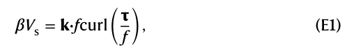
其中，Vs 为单位纬向距离上的经向质量输送量，f 为科里奥利参数，β 为科里奥利参数的经向变化率，τ 为风应力，k 为垂直单位矢量。
where Vs is the meridional mass transport over unit zonal distance, f is the Coriolis parameter, β is the meridional variation of the Coriolis parameter, τ is the wind stress and k is the vertical unit vector.
该方程表明，经向质量输送量（Vs）由风应力旋度（curl(τ/f)）、f 和 β 决定。
This equation illustrates that the meridional mass transport (Vs) is determined by wind stress curl (curl(τ/f)), f and β.
对于地形坡面上的西边界流，行星涡度的变化主要由伸缩作用平衡64：
For the WBC over a topographic slope, the change in planetary vorticity is mainly balanced by stretching64,
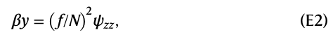
其中，y 为经向距离，N 为浮力频率，ψ 为流函数，ψzz 表示流函数的垂向二阶导数。
where y is meridional distance, N is buoyancy frequency, ψ is streamfunction and ψzz indicates its vertical second derivative.
为简化这些方程，可按以下标度将方程（1）和（2）中的变量无量纲化：
To simplify these equations, the variables in equations (1) and (2) could be non-dimensionalized using the following scaling:
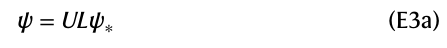
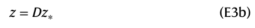
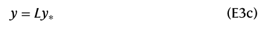
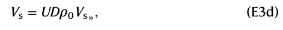
其中，* 表示无量纲量，U 表示水平流速的幅值，L 为经向长度尺度，D 为垂向长度尺度，ρ0 为海水密度。
where * denotes the non-dimensional quantity, U represents amplitude of the horizontal velocity, L is meridional length scale, D is vertical length scale and ρ0 is seawater density.
因此，求解无量纲方程（1）和（2）便可推导出垂向长度尺度（方程（1））。
Thus, solving non-dimensional equations (1) and (2) allows for derivation of the vertical length scale (equation (1)).
因此，风驱动西边界流的垂向尺度与科里奥利参数（f）和风应力旋度（curl(τ)）成正比，而与层结（N2）、科里奥利参数的经向变化率（β）以及海水密度（ρ0）成反比。
Therefore, the vertical scale of a wind-driven WBC is directly proportional to the Coriolis parameter (f) and wind stress curl (curl (τ)), while it is inversely proportional to stratification (N2), meridional variation of the Coriolis parameter (β) and seawater density (ρ0).
此前的研究已使用这一方法解释大陆或岛屿边界附近风驱动环流的垂向尺度49,50。
This method has been used in previous studies to explain the vertical scale of wind-driven circulation near continental or island boundaries49,50.
报告摘要
Reporting summary
数据可用性
Data availability
代码可用性
Code availability
致谢
Acknowledgements
作者贡献
Author contributions
利益冲突
Competing interests
附加信息
Additional information
扩展数据图
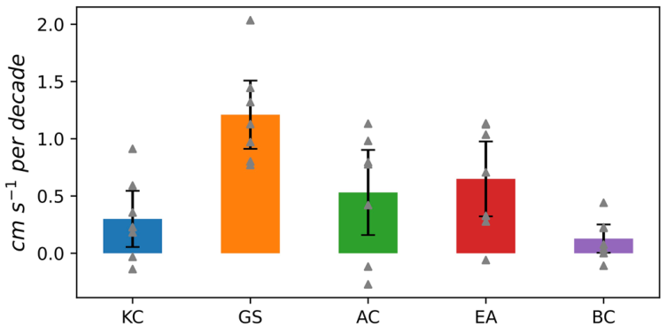
扩展数据图 1｜气候模式中各西边界流的 AP 指数。
Extended Data Fig. 1 | The AP index in climate models for the WBCs.
五支西边界流的 AP，基于七个高分辨率气候模式在 1950–2050 年的集合平均。
AP of five WBCs, based on the ensemble mean of seven high-resolution climate models spanning from 1950 to 2050.
灰色三角形表示不同模式中的趋势。
The grey triangles indicate the trend in different models.
误差棒表示基于七个样本的模式间离散度，使用自助法估计的 95% 置信区间计算。
The error bars indicate the inter-model spread based on seven samples, calculated using 95% confidence intervals estimated by a Bootstrap method.
AP 表明，所有西边界流近岸侧表层流速的加速都比离岸侧更明显。
The AP suggests a more pronounced acceleration of surface velocities on the onshore flank compared to the offshore flank of all WBCs.
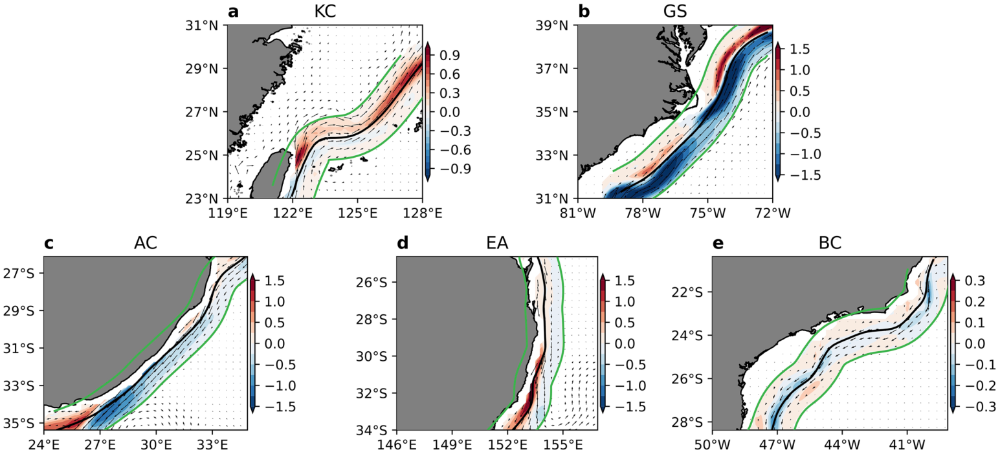
扩展数据图 2｜上层 200 m 流速的近岸侧增强。
Extended Data Fig. 2 | Onshore intensification of the upper 200 m velocity.
a–e，五支副热带西边界流在 1950–2050 年上层 200 m 垂直平均流速的线性趋势（cm s−1/十年）。
a-e, Linear trend of the vertical mean velocity in the upper 200 m (cm s-1 per decade) of five subtropical WBCs during 1950-2050.
黑色实线为海流轴线。
The solid black lines are the current axes.
黑色箭头表示海流矢量。
The black arrows indicate the current vectors.
绿线围出了轴线两侧各 1° 宽的带状区域。
The green lines enclose the 1° band on both sides of the axis.
西边界流的近岸侧增强在上层 200 m 内稳健存在。
The onshore intensification of WBCs is robust in the upper 200 m.
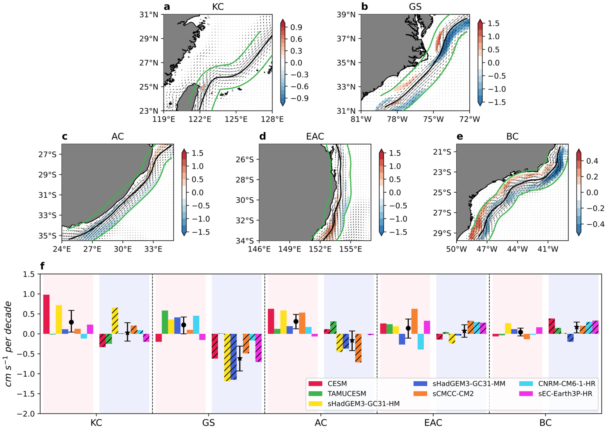
扩展数据图 3｜模拟的历史时期副热带西边界流近岸侧增强，及其与整个 1950–2050 年时期相比的差异。
Extended Data Fig. 3 | Simulated onshore intensification of subtropical WBCs during the historical period and its difference compared to the entire 1950-2050.
a–e，基于七个高分辨率气候模式在历史时期的集合平均得到的五支副热带西边界流表层流速线性趋势（cm s−1/十年）。
a-e, Linear trends of surface velocity (cm s−1 per decade) of five subtropical WBCs based on the ensemble mean of seven high-resolution climate models during the historical period.
彩色阴影表示在 95% 置信水平以上统计显著的区域。
The color shadings indicate regions that are statistically significant above the 95% confidence level.
黑色实线为海流轴线（见“方法”中的“西边界流轴线及其近岸侧和离岸侧趋势”）。
The solid black lines are the current axes (see ‘The axes of WBCs and onshore/offshore trends’ in Methods).
黑色箭头表示海流矢量。
The black arrows indicate the current vectors.
绿线围出了轴线两侧各 1° 宽的带状区域。
The green lines enclose the 1° band on both sides of the axis.
f，不同模式中，五支西边界流近岸侧（彩色阴影）和离岸侧（线纹阴影）各 1° 宽带状区域内的平均趋势之差，即整个 1950–2050 年时期的趋势减去历史时期的趋势。
f, Difference between the trend observed during the entire 1950-2050 and the historical periods (entire period minus historical period) averaged over the 1° band on the onshore (color shading) and offshore (line shading) flanks of five WBCs in different models.
黑色圆点（星号）表示基于七个样本得到的西边界流近岸侧（离岸侧）多模式集合平均值，误差棒则表示由自助法估计的 95% 置信区间所表征的模式间离散度。
The black circles (stars) denote the multi-model ensemble mean on the onshore (offshore) side of WBCs based on seven samples, while the error bars indicate the inter-model spread based on 95% confidence intervals estimated by a bootstrap method.
在历史时期，西边界流近岸侧的加速趋势相对较弱。
In the historical period, the acceleration trend on the onshore flank of WBCs is relatively weak.
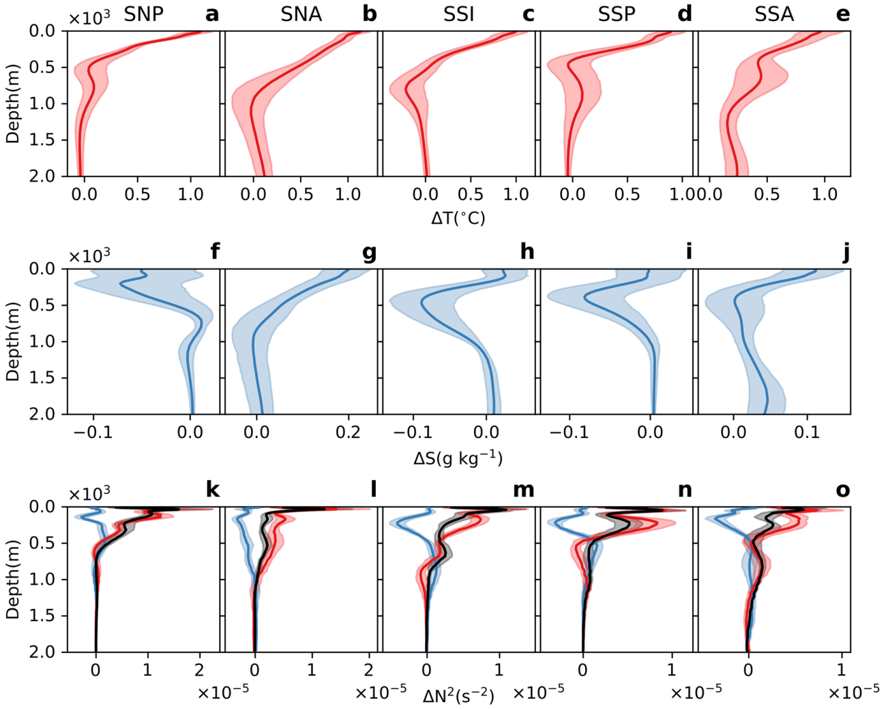
扩展数据图 4｜模拟的全球增暖下全球海洋层结变化。
Extended Data Fig. 4 | Simulated changes in global oceanic stratification under global warming.
a–e，全球增暖下各副热带海盆平均的温度垂直廓线变化（a，副热带北太平洋，SNP；b，副热带北大西洋，SNA；c，副热带南印度洋，SSI；d，副热带南太平洋，SSP；e，副热带南大西洋，SSA）。
a-e, Changes in vertical temperature profile under global warming averaged in each subtropical basin (a, the subtropical North Pacific Ocean, SNP; b, the subtropical North Atlantic Ocean, SNA; c, the subtropical South Indian Ocean, SSI; d, the subtropical South Pacific Ocean, SSP; e, the subtropical South Atlantic Ocean, SSA).
f–j，分别与 a–e 相同，但显示全球增暖下各副热带海盆平均的盐度变化。
f-j, As in a-e, respectively, but for changes of salinity under global warming averaged in each subtropical basin.
k–o，分别与 a–e 相同，但显示全球增暖下各副热带海盆平均的层结变化。
k-o, As in a-e, respectively, but for changes of stratification under global warming averaged in each subtropical basin.
结果基于七个气候模式的集合平均，其中变化由历史平均与 RCP8.5/SSP585 平均之间的差异得到。
The results are based on the ensemble mean of 7 climate models, where the changes are derived from the difference between the historical mean and the RCP8.5/SSP585 mean.
彩色阴影表示采用自助法估计的 95% 置信区间。
The color shadings represent the 95% confidence intervals estimated by a bootstrap method.
k–o 中的红线和蓝线分别表示温度（红色）和盐度（蓝色）变化对层结变化的相对贡献，黑线表示层结总变化（见“方法”中的“各副热带海域的风场与层结”）。
The red and blue lines in k-o are the relative contributions of temperature (red) and salinity (blue) changes to stratification changes, respectively, while the black line denotes the total changes of stratification (see ‘The wind and stratification in each subtropical ocean’ in Methods).
预期所有副热带环流中的海洋层结都将增强。
In all subtropical gyres, the oceanic stratification is expected to increase.
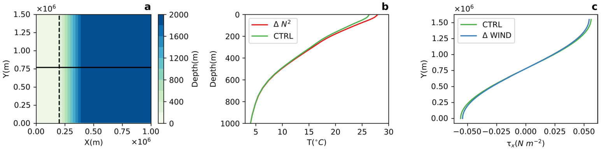
扩展数据图 5｜北太平洋理想化 MITgcm 模式配置。
Extended Data Fig. 5 | Idealized MITgcm model configuration over the North Pacific.
a，模式中的海底地形，黑色虚线表示大陆架边缘。
a, Bottom topography in the model, where the dashed black line denotes the edge of the continental shelf.
黑色实线表示图 4 中垂直剖面的位置。
The solid black line denotes the location of vertical section in Fig. 4.
b，CTRL 试验（绿色）与 ΔN2 试验（红色）在副热带北太平洋平均的温度垂直廓线。
b, The vertical profiles of the temperature in the CTRL run (green) and ΔN2 run (red) averaged over the subtropical North Pacific.
c，CTRL 试验（绿色）与 ΔWind 试验（蓝色）中的纬向风应力（τx）。
c, The zonal wind stress (τx) in the CTRL run (green) and ΔWind run (blue).
该理想化 MITgcm 试验基于副热带北太平洋（SNP）的情景开展。
The idealized MITgcm experiment is conducted based on the scenario in the SNP.
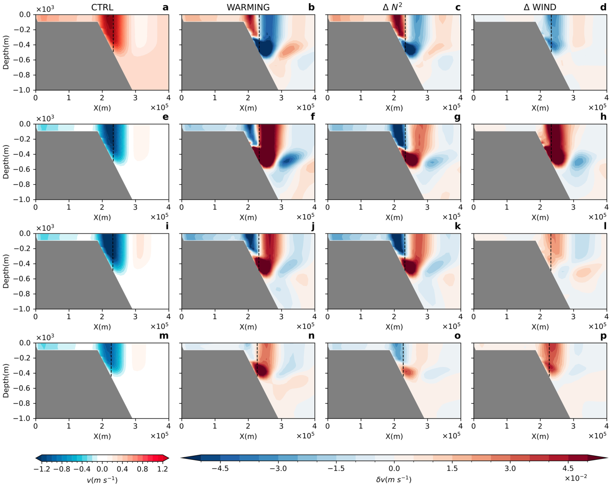
扩展数据图 6｜不同西边界流的向北流速及其异常。
Extended Data Fig. 6 | Northward velocities and their anomalies in different WBC.
a，CTRL 试验中湾流向北流速的垂直剖面。
a, Vertical section of the northward velocities of the Gulf Stream in the CTRL run.
b–d，WARMING 试验（b）、ΔN2 试验（c）及 ΔWIND 试验（d）相对于 a 中 CTRL 试验的流速异常。
b-d, Velocity anomalies in WARMING run (b), ∆N2 run (c), and ∆WIND run (d) relative to CTRL run in (a).
e–h，与 a–d 相同，但针对厄加勒斯流。
e-h, Same as a-d but for the Agulhas Current.
i–l，与 a–d 相同，但针对东澳大利亚流。
i-l, Same as a-d but for the East Australian Current.
m–p，与 a–d 相同，但针对巴西流。
m-p, Same as a-d but for the Brazil Current.
虚线表示各西边界流的轴线。
The dashed line denotes the axis of each WBC.
垂直剖面位于各模式区域的经向中点。
The vertical sections are located at the meridional centers of the model domains.
增强的层结在决定西边界流近岸侧增强方面的主导作用，在所有西边界流中都稳健存在。
The dominant role of enhanced stratification in determining the onshore intensification of WBCs is robust across all WBCs.
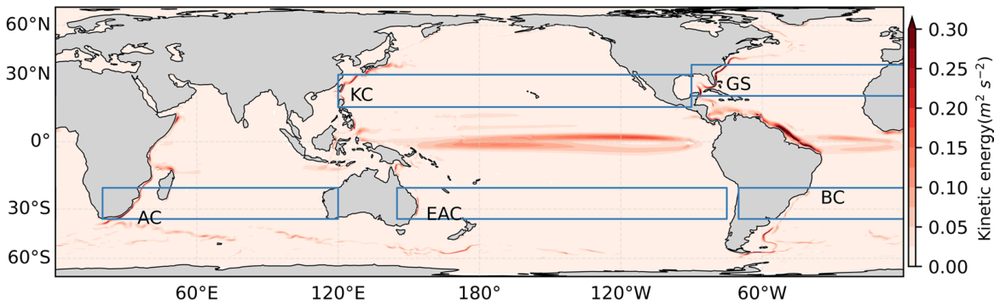
扩展数据图 7｜各西边界流对应的副热带环流区域。
Extended Data Fig. 7 | Area of the subtropical gyre for each WBC.
全球海洋表层海流的时间平均动能，基于七个高分辨率气候模式在 1950–2050 年的集合平均。
Time-mean kinetic energy of surface current in the global ocean based on the ensemble mean of seven high-resolution climate models from 1950 to 2050.
蓝色矩形表示海洋中的副热带区域。
The blue rectangles indicate the subtropical regions in the ocean.